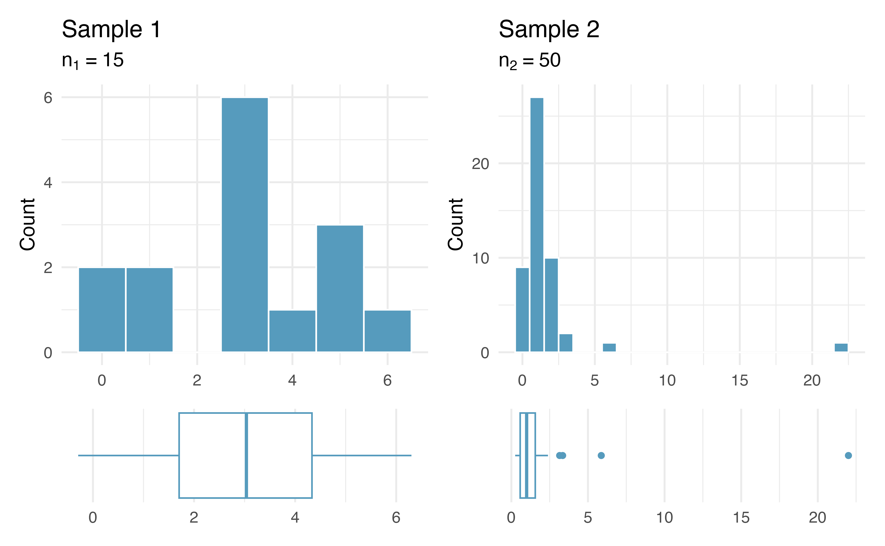

10/23/24
Normal distribution: symmetric, bell-shaped curve that is described by mean \(\mu\) and standard deviation \(\sigma\)
Use area under the Normal curve to obtain probabilities
68-95-99.7 rule
z-score standardizes observations to allow for easier comparison: \(z = \frac{x- \mu}{\sigma}\)
Let \(Z \sim N(0,1)\). If the 10th percentile of \(Z\) is -1.28, what is the 90th percentile?
Let \(X \sim N(0,2)\). If the 10th percentile of \(X\) is -2.56, what is the 90th percentile? Or can you not say without code?
Let \(Y \sim N(2,1)\). If the 10th percentile of \(Y\) is 0.72, what is the 90th percentile? Or can you not say without code?
We are going to learn one of the BIGGEST theorems in Statistics
Uses the Normal distribution, and will be immensely helpful for inference tasks of confidence intervals and hypothesis testing
Assume that you have a sufficiently large sample of \(n\) independent values \(x_{1},\ldots, x_{n}\) from a population with mean \(\mu\) and standard deviation \(\sigma\).
Then the distribution of sample means is approximately Normal:
\[ \bar{X} \overset{\cdot}{\sim} N\left(\mu, \frac{\sigma}{\sqrt{n}}\right) \]
Remark #1: does not require any assumption about how the data \(x_{1},\ldots, x_{n}\) behave so long as the following assumptions hold:
Remark #2: if the data \(x_{1},\ldots, x_{n}\) are known to be Normal and independent, then the distribution of sample means is exactly Normal, even for small \(n\)
For this reason, if \(n\) is small we require the data to be Normal
How to know? We replace (2) above with the normality condition:
If \(n\) is small \((n < 30)\): we assume data are approximately normal if there are no clear outliers
If \(n\) is larger \((30 \leq n < ?)\): we assume data are approximately normal if there are no particularly extreme outliers
Do you believe the large sample size/normality condition is satisified in the following two samples?

Sample 1: small \(n < 30\). But histogram and boxplot reveals no clear outliers, so I would say normality condition is met.
Sample 2: larger \(n \geq 30\). Even though \(n\) is larger, there is a particularly extreme outlier, so I would say normality condition is not met.
The average height of all NBA players in the 2008-9 season is 79.21 inches, with a standard deviation of 3.57 inches. We randomly sample \(20\) of these players and record their heights.
What is the sampling distribution of the sample mean heights?
We have independent samples, but not a large sample size. However, the histogram of the data looks approximately Normal (no clear outliers).
CLT applies! By CLT: \(\bar{X} \overset{\cdot}{\sim} N\left(79.21, \frac{3.57}{\sqrt{20}}\right)\)
If the data instead looked like the following, I would say normality condition is violated:
Customers are standing in line at a bank. The service time for each customer \(i\) is represented by \(X_{i}\). Suppose that the average service time for all customers is 5 minutes, with a standard deviation of 6 minutes.
Assume that a bank currently has 36 customers in it, and all customers are independent of each other. What is the probability that the average service time of all these customers is less than 4 minutes?
We want \(\text{Pr}(\bar{X} < 4)\)
Conditions for CLT met: independence (random sample) and sufficiently large sample size \((n=36)\).
Using 68-95-99.7 rule, probability that the average service time of all these customers is less than 4 minutes is about \(1 - (0.34 + 0.5) = 0.16\)
pnorm(4, 5, 1) = 0.159Remember \(\hat{p}\) is a sample mean! So the CLT applies to proportions as well!
\[ \hat{p} = \frac{1}{n}\sum_{i=1}^{n} x_{i} \qquad \qquad x_{i} =\{0, 1\} \]
CLT for sample proportions: if we have \(n\) independent binary observations with \(np \geq 10\) and \(n(1-p) \geq 10\), then:
\[ \hat{p} \overset{\cdot}{\sim} N\left(p, \sqrt{\frac{p(1-p)}{n}}\right) \]
What do the conditions \(np \geq 10\) and \(n(1-p)\geq 10\) mean?
Mars, Inc. is the company that makes M&M’s. In 2008, Mars changed their color distribution to have 13% red candies.
Let \(p\) be the proportion of red M&M’s in a random sample of \(n\) M&M’s. What is the distribution of \(\hat{p}\) if we take random sample of size:
\(n = 100\)
\(n = 10\)
We have independence due to the random sample. Need to check success-failure condition:
If \(n= 100\):
\(np = 100(0.13) = 13 \geq 10\)
\(n(1-p) = 100(0.87) = 87 \geq 10\)
So CLT applies:
\[ \begin{align*} \hat{p} &\overset{\cdot}{\sim} N\left(0.13, \sqrt{\frac{0.13(1-0.13)}{100}}\right) \\ &= N(0.13, 0.034 ) \end{align*} \]
The following histograms display sampling distributions for \(\hat{p}\) = proportion of red candies in random samples of size \(n = \{10, 50, 100, 200\}\):
Allows statisticians safely assume that the mean’s sampling distribution is approximately Normal. The Normal distribution has nice properties and is easy to work with.
Can be applied to both continuous and discrete numeric data!
Does not depend on the underlying distribution of the data.
Rather than using simulation techniques (i.e. bootstrap) to obtain the sampling distribution, the CLT gives us the sampling distribution of a mean “for free”
Formula for a (symmetric) \(\gamma \times 100\%\) confidence interval:
\[ \text{point estimate} \pm \underbrace{\text{critical value} \times \text{SE}}_{\text{Margin of Error}} \]
point estimate: the “best guess” statistic from our observed data (e.g. \(\hat{p}\) and \(\bar{x}\))
SE: standard error of the statistic
critical value: percentile that guarantees the \(\gamma\times 100\). This will vary depending on your data/assumptions
Suppose that I have a sample of \(n\) binary (0/1) values. I want a \(\gamma \times 100\%\) confidence interval for the probability of success \(p\) using the sample.
If assumptions of CLT for sample proportions hold, then we know
\[ \hat{p} \overset{\cdot}{\sim} N\left(p, \sqrt{\frac{p(1-p)}{n}}\right) \]
We can use/manipulate this result to obtain a confidence interval for the unknown \(p\)!
How do we know if success-failure condition holds without knowing \(p\)?
Let’s use our best guess: \(\hat{p}\)
Success-failure condition for inference: \(n\hat{p}\) and \(n(1-\hat{p})\) both \(\geq 10\)
Point estimate: observed \(\hat{p}\) from our sample
Standard error: \(\sqrt{p(1-p)/n}\)
But we still don’t have \(p\)!
Instead, use the following approximation for CI:
\[\text{SE}(\hat{p}) \approx \sqrt{\frac{\hat{p}(1-\hat{p})}{n}}\]
Critical value: to obtain the middle \(\gamma \times 100\%\) part, we use the \((1-\gamma)/2\) and \((1+\gamma)/2\) percentiles of the \(N(0,1)\) distribution
\(z_{(1-\gamma)/2}^{*}\) (lower bound) and \(z_{(1+\gamma)/2}^{*}\) (upper bound)
Note: \(z_{(1+\gamma)/2}^{*} = - z_{(1-\gamma)/2}^{*}\)
So the formula for a (symmetric) \(\gamma\times 100\%\) CI for \(p\) is:
\[ \hat{p} \pm z_{(1+\gamma)/2}^{*}\times \sqrt{\frac{\hat{p}(1-\hat{p})}{n}} \]where the critical value is obtained from \(N(0,1)\) distribution
Come take STAT 311 to see why this is our CI!
A poll of 100 randomly sampled registered voters in a town was conducted, asking voters if they support legalized marijuana. It was found that 60% of respondents were in support.
What is the population parameter? What is the point estimate/statistic?
Find a (symmetric) 90% confidence interval for the true proportion of town residents in favor of legalized marijuana.
Conditions for CLT met?
Independence: random sample
Success-failure condition: \(n\hat{p} =100(0.6) = 60 \geq 10\) and \(n(1-\hat{p}) = 100(0.4) = 40 \geq 10\)
Find a (symmetric) 90% confidence interval for the true proportion of town residents in favor of legalized marijuana.
Gathering components for CI:
Point estimate: \(\hat{p}\) = 0.6
Standard error: \(\text{SE}(\hat{p}) \approx \sqrt{\frac{0.6(0.4)}{100}} \approx 0.049\)
Critical value: what percentiles do we want?
qnorm(0.95, mean = 0, sd = 1) \(\approx 1.645\)So our 90% confidence interval for \(p\) is:
\[ 0.6 \pm 1.645(0.049) = (0.519, 0.681) \]
Interpret the confidence interval in context!
What is the main takeaway of the CLT?
What are the assumptions of the CLT?
How do we construct a \(\gamma \times 100\%\) confidence interval using a mathematical model?